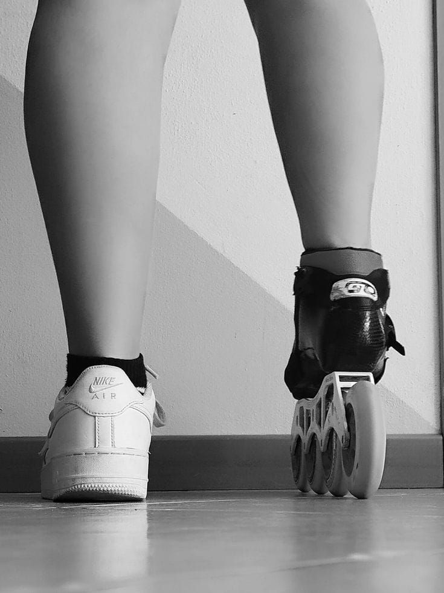

Cómo controlar los nervios en una competencia de patinaje
Introducción
El patinaje es un deporte que combina técnica, disciplina y pasión. Sin embargo, muchos patinadores experimentan nervios antes de una competencia. Estos nervios pueden afectar el rendimiento, la concentración y la confianza. Por eso, este proyecto busca ofrecer estrategias prácticas para manejar la ansiedad y presentarse con mayor seguridad en cada competencia.

Estrategias y Actividades
1. Preparación mental
Practicar respiración profunda (inhalar en 4 segundos, mantener 4, exhalar en 6).
Visualizar la rutina antes de salir a la pista.
Repetir frases positivas como: “He entrenado, estoy listo, lo puedo lograr”
2. Preparación física
Dormir bien la noche anterior.
Realizar un calentamiento completo y suave antes de competir.
Comer ligero, evitando comidas pesadas o nuevas.
3. Manejo de los pensamientos
Enfocarse en el presente, no en el resultado.
Recordar que la competencia es también una experiencia de aprendizaje.
Pensar en el esfuerzo del entrenamiento, más que en ganar o perder.
4. Apoyo emocional
Hablar con entrenadores, amigos o familia antes de salir a competir.
Escuchar música que motive y relaje.
Sonreír y disfrutar el momento, recordando que el patinaje es una pasión.

Conclusión
Los nervios son normales en cualquier competencia, pero no tienen que convertirse en un obstáculo. Con preparación mental, física y emocional, es posible transformar esa energía en motivación y confianza. Este proyecto invita a cada patinador a probar estas estrategias, adaptarlas a su estilo y compartirlas con otros, creando así una comunidad más fuerte y segura en el patinaje.